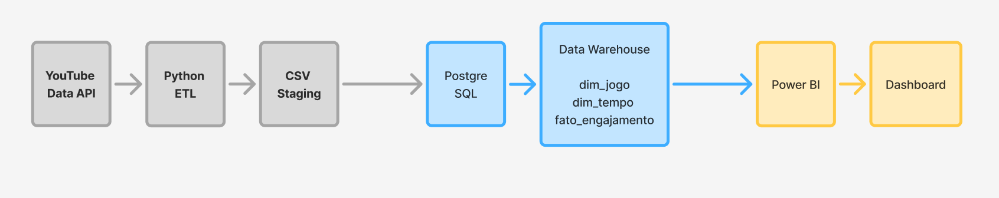
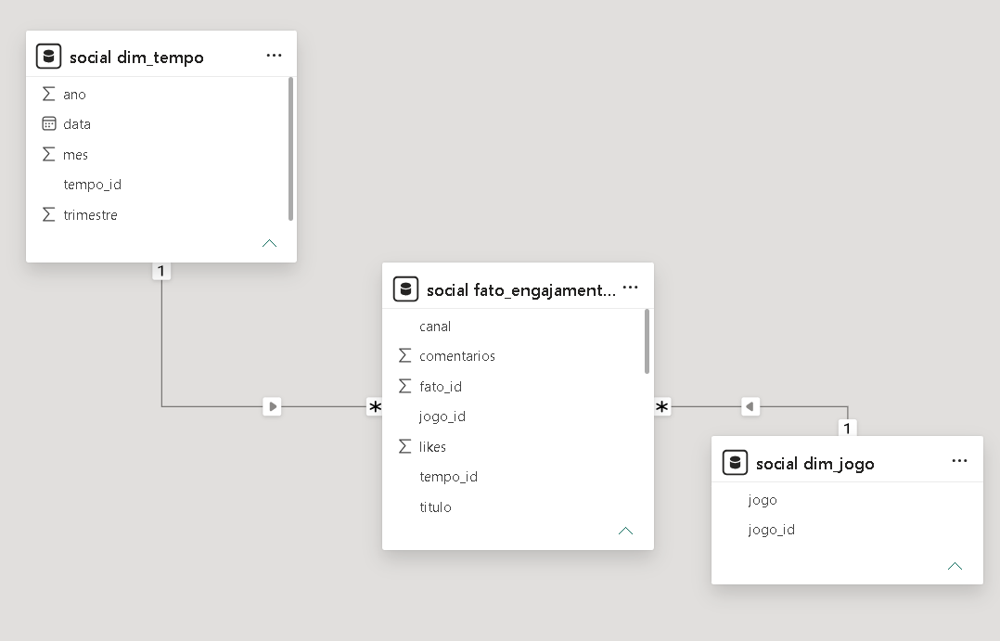
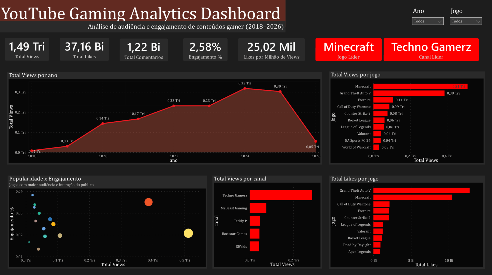

Pipeline completo: YouTube API → Python → PostgreSQL → Data Warehouse → Power BI
Projeto de Business Intelligence focado na análise de audiência e engajamento de conteúdos gamers no YouTube.
Os dados foram coletados automaticamente através da YouTube Data API, tratados em Python, armazenados em PostgreSQL e organizados em um modelo dimensional para análise no Power BI.
O objetivo foi identificar quais jogos concentram maior audiência, quais canais dominam a criação de conteúdo e como o engajamento do público varia entre diferentes comunidades gamers.
YouTube API → Python → Pandas → PostgreSQL → Data Warehouse → Power BI


